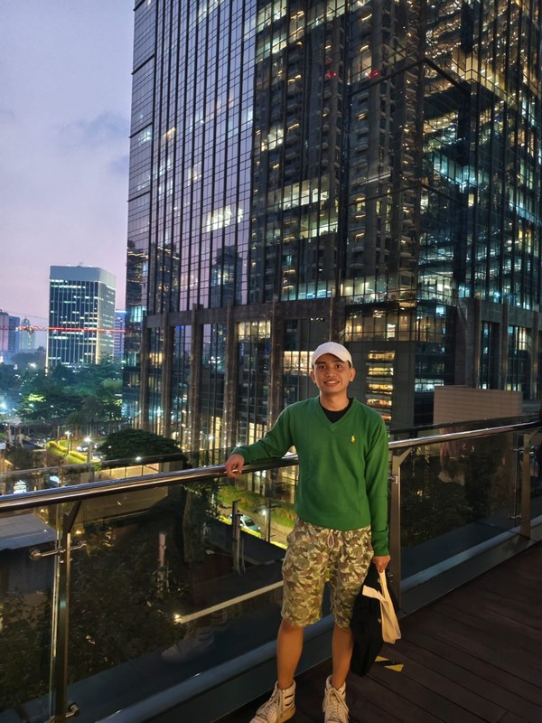
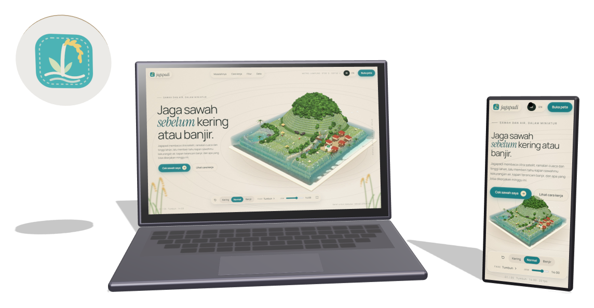
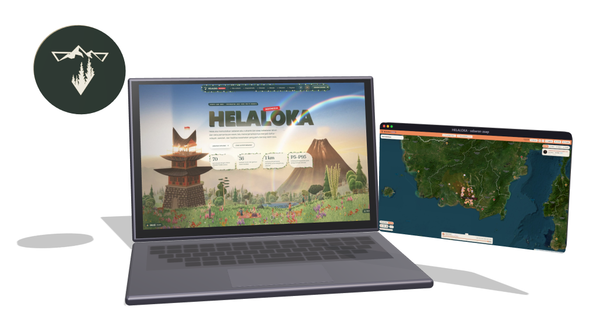
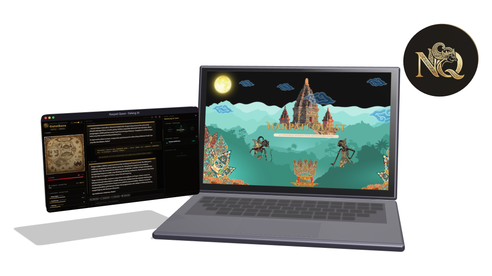
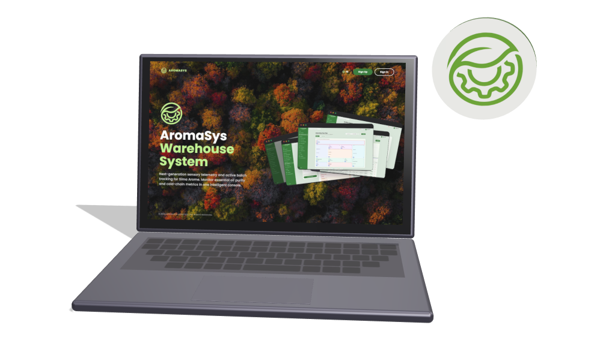
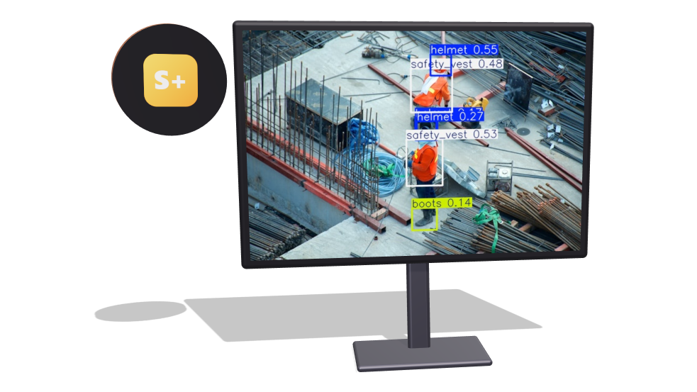
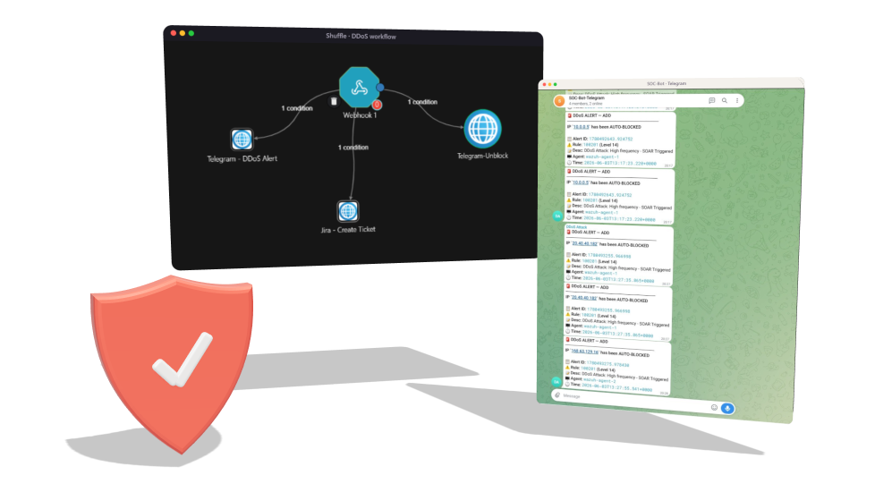
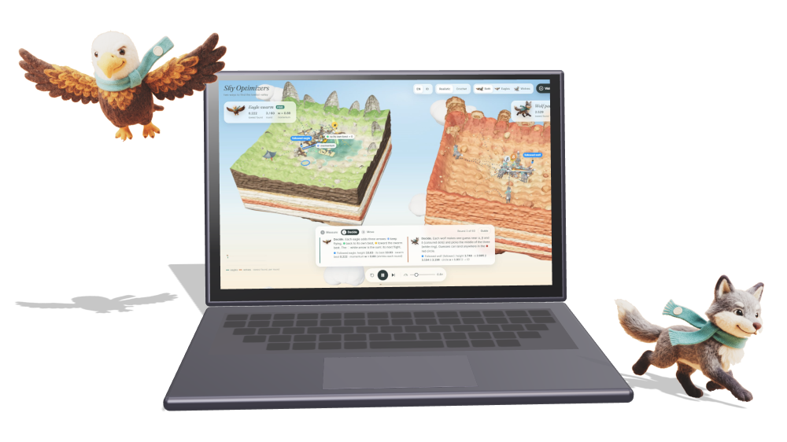

01 / SEE
Perception
YOLOv8 geofencing, PPE checks, Sentinel radar and optical imagery.
// hello world, I'm Arya
IT student at ITS Surabaya, building systems that see, defend and decide.
now building Jagapadi · UM Metro Hackathon 2026
THE ISLAND
A camera that sees, a dome that defends, racks that decide, and rice terraces for the farmers it all serves.
SURABAYA, ID · 7.28° S 112.79° E

01 · ABOUT ME
I study Information Technology at Institut Teknologi Sepuluh Nopember (ITS) in Surabaya, Indonesia. Most of my work is for people under pressure: farmers watching for drought, towns in the path of volcanic ash, refinery crews near red zones, and SOC teams facing a flood of packets.
I like closing the loop: systems that see what is happening, defend what matters, and help people decide what to do next.
02 · WHAT I WORK ON
01 / SEE
YOLOv8 geofencing, PPE checks, Sentinel radar and optical imagery.
02 / DEFEND
Wazuh decoders, SOAR playbooks, digital forensics, LLM agent guardrails.
03 / DECIDE
gRPC meshes, FastAPI services, cloud scheduling heuristics.
15.7M
SYN-flood packets absorbed and blocked
SOC-SOAR
< 4 s
from detection to block, no human in the loop
SOC-SOAR
< 50 ms
per frame to check red-zone breaches
SIEWS+
~15%
lower makespan than FCFS and Round Robin
PEFT scheduler
2,812
papers screened for the world-model review
SLR
03 · FEATURED WORK

Sentinel-1 radar and Sentinel-2 imagery plus weather ensembles feed a water-balance model for fields in Metro, Lampung. Farmers get plain-language verdicts and Telegram alerts on drought, flood and pest risk; extension officers get a group dashboard and a 3D field diorama.
Repository is private during judging

One Lagrangian particle engine simulates volcanic ash and wildfire smoke across Indonesia: 70 volcanoes and 36 fire-prone forest and peat areas, with P5/P50/P95 impact ranges, clinics in the plume and routes to hospitals outside it.

An interactive Mahabharata adventure in the world of Javanese wayang, narrated by a "Dalang AI" game master that works with Gemini, OpenAI, Groq, DeepSeek or OpenRouter and uses retrieval to stay true to the lore.

Digital-twin floor plan with live sensor and cold-chain telemetry, Roboflow vision quality control, a Gemini 2.5 Flash operations copilot, 4-role RBAC and FIFO expiry tracking.

YOLOv8 on live RTSP streams checks PPE and detects people inside red-zone polygons in under 50 ms per frame, triggers fail-safe shutdown signals, and alerts over WebSocket and WhatsApp.

Custom Wazuh decoders spot SYN-flood state exhaustion, an active-response script drops the attacker with iptables, and Shuffle opens a Jira ticket and posts to Telegram. Under 4 seconds, no human in the loop.

Particle Swarm Optimization and the Grey Wolf Optimizer search the same landscape step by step on floating islands, with a narrated explainer on how both are used in cloud computing.
04 · TEAMS & ORGANISATIONS
05 · RESEARCH
06 · CONTACT
Open to research collaboration, internships and hackathon teams.